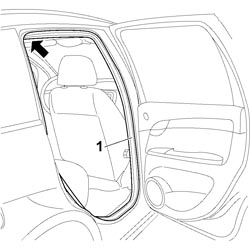
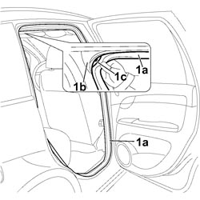

7010A34 REAR SIDE DOOR COMPARTMENT SEAL - R.R
- Path
- Procedures > 70 FITTINGS > 7010 PASSENGER COMPARTMENT REAR SIDE DOORS > 7010A REAR SIDE DOOR ASSEMBLY > 7010A34 REAR SIDE DOOR COMPARTMENT SEAL - R.R
- Kind
- repair procedure (removal / refitting; the operation number is the code)
- Applies to
- all engines; all production periods
- Interactive page
- https://sloeber94.github.io/elrnDB-fCrm/en/#/194000897
Applies to: all engines; all production periods
 Removing
Removing
 Refitting
RefittingOp. 7040L44 REAR DOOR RUNNING BOARD (ONE), LEFT OR RIGHT - R.R.
1. Mark the gasket at the point shown by the arrow in the middle of the corner, then release it and remove it from the housing.

Applies to: all engines; all production periods
Refitting
Removing- Check that the seal is not cut or cracked.
- If it is not okay, replace the seal.
1. Fit the gasket (1a) in place starting from the top corner (1b) and positioning the reference mark (1c) made previously on the gasket in the middle of the actual corner.

Applies to: all engines; all production periods
Op. 7040L44 REAR DOOR RUNNING BOARD (ONE), LEFT OR RIGHT - R.R.